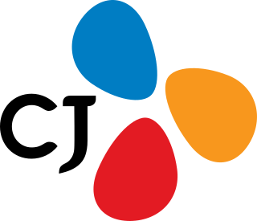

01
AI와 거리 좁히기 — 1시간 안에 만드는 첫 결과물
프롬프트 한 줄로 미래 명함·비전 이미지를 직접 만들어 봅니다. "AI가 어렵다"는 거리감을 체험으로 허무는 시간입니다.
수료증이 아니라, 다음 날 바로 쓰는 결과물이 남습니다.
같은 리더십 교육도 조직마다 출발점이 다릅니다.
리더들의 AI 리터러시 수준과 회사의 업무 구조를 먼저 진단하고, 필요한 모듈을 조합해 그 조직의 리더를 위한 커리큘럼을 새로 설계합니다.
인터뷰와 설문으로 리더들의 AI 리터러시 수준과 회사의 업무 구조를 파악합니다.
진단 결과로 우리 조직 리더 그룹의 단계 — 도입·활용·심화 — 를 정합니다.
필요한 모듈을 조합하고, 실습 주제를 자사 맥락에서 가져와 커리큘럼을 새로 만듭니다.
퍼실리테이터가 함께하는 실습으로 진행하고, 리더마다 실행 계획과 산출물이 남습니다.
"조직에 처음 AI를 도입하는데 어떻게 시작해야 할지 막막하다"
프롬프트 한 줄로 미래 명함·비전 이미지를 직접 만들어 봅니다. "AI가 어렵다"는 거리감을 체험으로 허무는 시간입니다.
우리 회사의 산업·업무 언어를 넣고 AI와 문답해 봅니다. 일반 예제가 아닌 자사 맥락에서 AI의 실제 쓸모를 확인합니다.
보고서 검토, 전략 검증, 회의 준비 같은 리더의 실제 업무에 AI를 적용해 봅니다. 관리 관점에서 AI를 보는 눈을 만듭니다.
교육이 끝나기 전에, 각 리더가 자기 조직에서 AI를 먼저 적용할 한 가지를 정합니다. 경험이 곧바로 실행 계획으로 이어집니다.
* 위 구성은 예시입니다. 사전 진단 결과에 따라 리터러시 모듈의 비중과 난이도, 실습 주제가 조직에 맞게 재구성됩니다.
피드백과 목표 합의가 고민인 리더 그룹이라면 — 나의 성과관리 유형 진단에서 시작해, AI 가상 팀원과의 면담 시뮬레이션으로 상황별 대응을 연습합니다.
* 상세 커리큘럼은 사전 진단 후 조직 상황에 맞게 제안드립니다.
일반적인 사례가 아니라 리더 본인의 역할과 업무로 시작하기 때문에, 감상이 아니라 판단이 남습니다.
직접 다뤄봤기 때문에 어디부터 손댈지 실무진에게 넘기지 않고 리더가 정합니다. 막막함이 구체적인 출발점으로 바뀝니다.
구성원이 먼저 앞서가는 상황에서, 리더가 기준과 방향으로 따라잡습니다. 지시가 아니라 납득되는 기준을 제시합니다.
AI로 무엇이 가능하고 무엇이 어려운지 본인 손으로 확인했기 때문에, 보고와 제안을 그대로 받지 않고 판단합니다.
전사 확산이든 직무 교육이든, 다음 단계를 경험을 근거로 결정합니다. 도입 논의가 미뤄지지 않습니다.
팀제이커브의 모든 실습 교육에는 메인 강사 외에 보조강사(퍼실리테이터)가 함께 참여합니다. 처음 AI를 써보는 분도, 실습 중 막히는 순간에도 옆에서 바로 도와 과제가 끝까지 원활하게 진행되도록 지원합니다.
4~6명 그룹당 1명의 퍼실리테이터가 같은 테이블에 함께 앉아, 실습 내내 밀착 지원합니다.
메인 강사가 전체 교육의 흐름을 이끌고, 퍼실리테이터는 그룹 안에서 실습 과제를 지원합니다. 강의가 끊기지 않아 교육 몰입이 유지됩니다.
계정 로그인부터 프롬프트 작성까지, 막히는 지점을 그 자리에서 해결해 AI를 처음 접하는 임직원도 실습 결과물을 완성하고 돌아갑니다.
제이커브 스쿨의 AI 교육은 단순한 도구 사용법을 가르치는 것이 아닙니다.
참여자가 능동적으로 AI를 활용할 수 있도록 설계되었으며,
실무에 바로 적용할 수 있는 케이스를 바탕으로 진행됩니다





네. 사전 진단으로 리더 그룹의 AI 리터러시 수준을 파악한 뒤, 필요한 만큼 리터러시 모듈을 조합해 설계합니다. 디지털 편차가 큰 임원진도 1시간 안에 첫 결과물을 직접 만들어 봅니다.
기본은 반나절~1일 특강·워크숍 형태입니다. 조직 상황에 따라 임원 대상 시리즈 특강, 팀장급 워크숍 등으로 나눠 구성할 수 있으며, 진단 후 가장 적합한 형태를 제안드립니다.
네. 사전 인터뷰와 진단으로 회사의 산업, 조직 구조, 리더들의 실제 업무를 파악한 뒤 커리큘럼을 새로 설계합니다. 실습 주제도 일반 예제가 아닌 자사 맥락에서 가져옵니다.
교육 마지막에 각 리더가 자기 조직의 첫 적용 지점을 정하고, 이를 바탕으로 직무역량 교육과 AX 컨설팅으로 이어지는 확산 로드맵을 제안드립니다. 리더의 경험이 전사 도입의 출발점이 되는 구조입니다.
대상 인원, 시간, 형태에 따라 맞춤 견적으로 안내드립니다. 상담 신청 시 조직 규모와 현재 고민을 알려주시면 가장 적합한 구성과 견적을 제안드립니다.